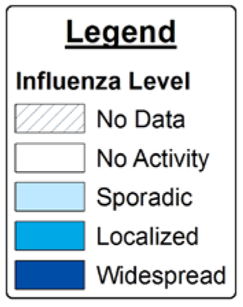
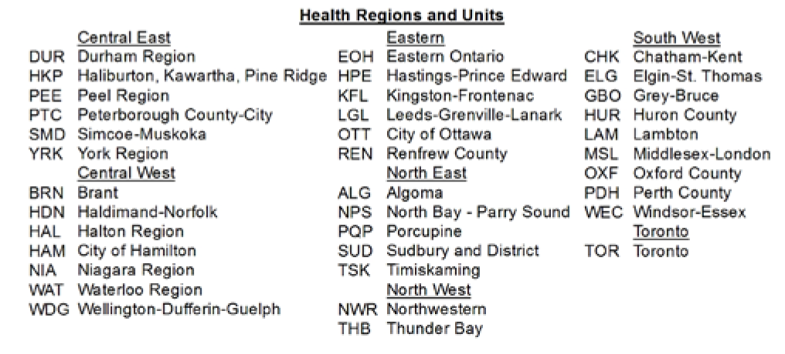

Ontario Respiratory Virus Bulletin | 2014-2015
SURVEILLANCE WEEKS 41 AND 42 (October 5, 2014 – October 18, 2014)
This issue of the Ontario Respiratory Virus Bulletin provides information
on the surveillance
period from October 5, 2014 to October 18, 2014 (Weeks 41 and 42). Unless otherwise
specified, data presented in this issue of the Bulletin is for Weeks 41 and 42 and data
extraction occurred on Wednesday, October 22, 2014. Weekly production of the expanded
version of the Bulletin will resume on November 7 for the 2014-15 season.
| Laboratory-confirmed influenza
cases1 |
Similar |
There were 15 influenza cases (11 influenza A and 4 influenza B)
reported1 in
Weeks 41 and 42, which was similar to the 9 influenza cases reported in Weeks 39
and 40 (7 influenza A and 2 influenza B).
|
| Respiratory sample percent positivity for
influenza2 |
Similar |
Percent positivity2 of laboratory tests for all
influenza types in Weeks 41 and 42 was 0.9%, which was similar to the percent
positivity in Weeks 39 and 40 (0.5%).
|
| Influenza outbreaks3 |
Similar |
There was one new influenza outbreak reported in Weeks 41 and 42,
which was similar to Weeks 39 and 40.
|
| Influenza activity levels reported by health
units
|
Similar |
In Week 41, 29 health units reported no influenza activity, three
reported sporadic activity and two reported localized activity. In Week 42, 30
health units reported no activity, three reported sporadic activity and one
reported localized activity.
|
| Influenza outbreaks |
Similar |
There was one new influenza outbreak reported in Weeks 41 and 42,
which was similar to Weeks 39 and 40.
|
| OVERALL ASSESSMENT |
Similar |
Overall, the indicators show that influenza activity for Weeks 41
and 42 was similar to Weeks 39 and 40.
|
| Hospitalizations among laboratory-confirmed
cases of influenza1 |
Similar |
There were four hospitalized cases reported in Weeks 41 and 42,
which was similar to the four hospitalized cases reported in Weeks 39 and 40.
|
| Deaths among laboratory-confirmed cases of
influenza1 |
Similar |
There were no deaths reported in Weeks 41 and 42, which was
similar to no deaths reported in Weeks 39 and 40.
|
1The number of reported cases needs
to be interpreted with caution because there is a lag between the onset of illness, hospital
admission or death and when this information is reported to public health. 2Positivity
among specimens submitted for testing to Ontario laboratories reporting to the Centre for
Immunization and Respiratory Infectious Diseases (CIRID). 3The number of new
outbreaks reported for the current week is based on the onset date of illness for the first
case in an outbreak.
Summary of current and season-to-date respiratory virus activity in
Ontario
Influenza activity in the current surveillance period was
similar to the
previous
period.
For the 2014-2015 surveillance season to
date,
29 laboratory-confirmed influenza cases have been reported.
Among other circulating non-influenza respiratory viruses identified
through laboratory testing:
1Based on percent positivity
among
specimens submitted for testing to laboratories reporting to the Public Health
Agency of
Canada’s Centre for Immunization and Respiratory Infectious Diseases (CIRID).
Percentage of respiratory viral pathogens (influenza A, influenza B,
respiratory syncytial virus, and parainfluenza virus) detected among specimens tested by all
methods: Ontario, October 20, 2013 to October 18, 2014
Source: These data have been obtained from the Public
Health Agency of Canada’s (PHAC) Centre for Immunization and Respiratory Infectious
Diseases
(CIRID) respiratory virus detection tables as of October 22, 2014; they are based on
data
submitted to PHAC from 16 laboratories in Ontario.
Notes:
The numbers reported in this figure represent results submitted to the CIRID by 16
participating laboratories in Ontario, including 11 Public Health Ontario Laboratories
(PHOLs) and five hospital-based laboratories.
Interpret results for Week 51 with caution as only four laboratories in Ontario, three
of
which were hospital-based laboratories, submitted results to the CIRID.
Results above are assigned to a particular surveillance week based on when test results
are
reported to PHAC; these data are not updated when results are submitted late for
previous
surveillance weeks. These data represent the number of specimens tested, which may not
necessarily correspond with the number of patients as more than one specimen may have
been
submitted per patient.
Cumulative numbers for the season to date are also available through FluWatch:
http://www.phac-aspc.gc.ca/fluwatch/
Institutional respiratory infection outbreaks by week of illness onset in the
first case: Ontario, October 20, 2013 to October 6, 2014
Source: Ontario
Source: Ontario Ministry of Health and Long-Term
Care, integrated Public Health Information System (iPHIS) database, extracted by Public
Health Ontario [2014/10/22].
Notes:
Institutional respiratory infection outbreaks for which the date of onset of illness for
the first case is missing are excluded in this figure. Interpret the most recent week
with caution due to reporting delays.
Institutional respiratory infection outbreaks by week of illness onset in the
first case: Ontario, October 20, 2013 to October 6, 2014
Source: Ontario Ministry of Health and Long-Term
Care, integrated Public Health Information System (iPHIS) database, extracted by Public
Health Ontario [2014/10/22].
Notes:
Institutional respiratory infection outbreaks for which the date of onset of illness for
the first case is missing are excluded in this figure. Interpret the most recent week
with caution due to reporting delays.
Influenza activity levels reported by public health units: Ontario, October
12, 2014 to October 18, 2014 (Week 42)


Source: Public Health Ontario [Provincial Influenza
Activity Report (Appendix C) Database].
Notes:
Influenza activity levels are assigned by local public health units and reported to Public
Health Ontario by the Tuesday following the end of each surveillance week at 4:00 p.m.
Activity levels are assigned based on laboratory confirmations, ILI reports from various
sources, and laboratory-confirmed institutional respiratory infection outbreaks. Please
refer to the detailed definitions for the 2014-2015 season for more information.
Activity levels reported for a particular surveillance week may not necessarily correspond
to the number of new outbreaks reported in the same week in Table 3 because ongoing
outbreaks from previous weeks, as well as laboratory confirmed outbreaks in schools, may be
included in the assessment of the activity level.